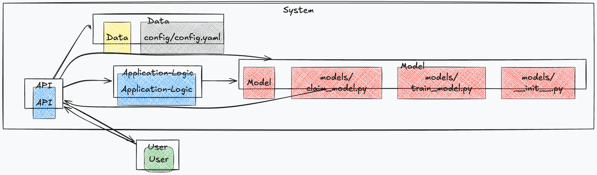
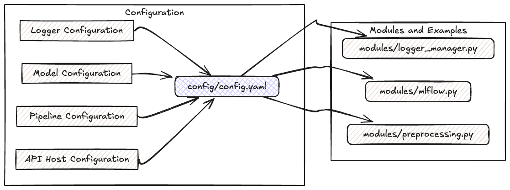
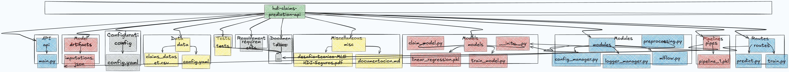

Configuration - Documentation
This document provides detailed information about the configuration settings and directory structure used in the HDI Claims Prediction API.

Table of Contents
- Introduction
- Configurations
- Logger Configuration
- Model Configuration
- Pipeline Configuration
- API Host Configuration
- Directory Structure
- requirements
- test
- routes
- pipes
- models
- docs
- data
- config
- artifacts
- modules
- app
- Deployment Instructions
- Common Issues and Troubleshooting
- Glossary
Introduction
Welcome to the configuration documentation for the HDI Claims Prediction API. This guide aims to provide you with all the necessary information to configure and understand the layout of the project.
Configurations

Logger Configuration
The logging configuration specifies where and how logs should be stored and rotated. You can find the configuration in the config/config.yaml file.
Configuration
logger:
log_file: "logs/logger.log"
csv_file: "logs/logger.csv"
level: "INFO"
max_bytes: 10485760
backup_count: 5
- Log File: Path where the log file will be stored.
- CSV File: Path where the CSV log file will be stored.
- Log Level: Logging level to control the verbosity.
- Max Bytes: Maximum size (in bytes) for each log file before it gets rotated.
- Backup Count: Number of backup log files to keep.
Example modules/logger_manager.yaml
import logging
import logging.handlers
logger = logging.getLogger()
logger.setLevel(logging.INFO)
handler = logging.handlers.RotatingFileHandler(
'logs/logger.log', maxBytes=10485760, backupCount=5
)
logger.addHandler(handler)
Model Configuration
The model path specifies where the trained model is stored. config/config.yaml
Configuration
models:
model_path: "models/linear_regression.pkl"
- Model Path: Path where the machine learning model file is stored.
Example modules/mlflow.py
Load the model in Python:
import joblib
def load_model(cfg):
"""Carga el modelo preentrenado basado en la configuración de Hydra.
Args:
cfg (DictConfig): Configuración cargada por Hydra.
Returns:
joblib(pkl): Modelo cargado.
"""
logger = get_logger()
model_path = cfg.models.model_path
abs_model_path = os.path.join(root_dir, model_path)
logger.info(f"Cargando el modelo desde: {model_path}")
return joblib.load(abs_model_path)
Pipeline Configuration
The pipeline configuration outlines the steps involved in the preprocessing pipeline.
Configuration config/config.yaml
pipeline:
imputation_path: "artifacts/imputations.json"
steps:
- name: "Step 1"
pipeline: "pipes/pipeline_1.pkl"
- name: "Step 2"
pipeline: "pipes/pipeline_2.pkl"
- name: "Step 3"
pipeline: "pipes/pipeline_3.pkl"
- name: "Step 4"
pipeline: "pipes/pipeline_4.pkl"
- name: "Step 5"
pipeline: "pipes/pipeline_5.pkl"
- Imputation Path: Path where the imputation details are stored.
- Steps: Sequence of steps in the preprocessing pipeline.
Example Usage modules/preprocessing.py
Loading and using the pipeline:
# pipeline steps
for step in cfg.pipeline.steps:
logger.info(f"Ejecutando {step.name} con pipeline: {step.pipeline}")
df = pipeline_run(df, step.pipeline)
# Cargar el pipeline
logger.info(f"Cargando el pipeline: {abs_pipeline_file}")
with open(abs_pipeline_file, 'rb') as file:
pipeline = dill.load(file)
API Host Configuration config/config.yaml
The API server host and port settings.
Configuration
api:
host: "127.0.0.1"
port: 8000
- Host: IP address where the API server is hosted.
- Port: Port number on which the API server listens.
Example
Running the API locally:
uvicorn main:app --host 127.0.0.1 --port 8000
Directory Structure

Explanation of various directories and important files within the project.
requirements requirements/requirements.txt
Contains the requirements files listing the dependencies for the project.
requirements/
├── requirements-docs.txt # Dependencies required for generating documentation
├── requirements.txt # Core dependencies for running the project
└── requirements_dev.txt # Development dependencies for testing, linting, etc.
Principal File: requirements.txt
The requirements.txt file lists the core dependencies required to run the project. The dependencies include:
fastapi
pydantic
pandas
numpy
dill
mlflow
scikit-learn
uvicorn
hydra-core
joblib
python-dotenv
omegaconf
python-multipart
pytest
httpx
locust
coverage
To install these dependencies, run:
pip install -r requirements/requirements.txt
test test/test_functions.py
Holds all the unit tests and integration tests for the project.
test/
└── test_functions.py # Test cases for unit and integration tests
# 1 directories
Principal Code
The test folder contains test cases for unit testing and integration testing using pytest and fastapi.testclient.
Test File: test_pipeline.py
import pytest
import pandas as pd
from fastapi.testclient import TestClient
from modules import full_pipeline, load_model, config_manager
from api.main import app
# Create a test client for the API
client = TestClient(app)
# Fixture to initialize and clear Hydra configuration in each test
@pytest.fixture(scope="module")
def hydra_cfg():
from hydra.core.global_hydra import GlobalHydra
if GlobalHydra.instance().is_initialized():
GlobalHydra.instance().clear()
config = config_manager.init_config()
return config # Ensure to return the DictConfig object
def test_full_pipeline(hydra_cfg):
# Example data for the pipeline
data = pd.DataFrame({
"claim_id": [1],
"marca_vehiculo": ["ford"],
"antiguedad_vehiculo": [5],
"tipo_poliza": [2],
"taller": [1],
"partes_a_reparar": [3],
"partes_a_reemplazar": [1]
})
try:
result = full_pipeline(data, hydra_cfg)
assert not result.isnull().values.any(), "The pipeline should impute all null values"
assert "log_total_piezas" in result.columns, "The 'log_total_piezas' column is missing in the pipeline result"
except Exception as e:
pytest.fail(f"Pipeline error: {str(e)}")
def test_load_model(hydra_cfg):
# Test for loading the model
try:
model = load_model(hydra_cfg)
assert model is not None, "The model was not loaded correctly"
except Exception as e:
pytest.fail(f"Model loading error: {str(e)}")
def test_predict_endpoint():
# Input data for the predict endpoint
payload = {
"claim_id": 1,
"marca_vehiculo": "ford",
"antiguedad_vehiculo": 5,
"tipo_poliza": 2,
"taller": 1,
"partes_a_reparar": 3,
"partes_a_reemplazar": 1
}
response = client.post("/api/v1/predict/", json=payload)
assert response.status_code == 200, "The endpoint response should be 200 OK"
json_data = response.json()
assert "prediccion" in json_data, "The response should contain the 'prediccion' field"
routes routes/predict.py
Contains the route definitions for the API endpoints. Example: train.py, predict.py.
routes/
├── __init__.py # Initialization file for Python package
├── predict.py # Route for prediction endpoint
└── train.py # Route for training endpoint
# 1 directories, 3 files
Principal Code: routes/predict.py
The predict.py file inside the routes folder contains the endpoint logic for the /api/v1/predict/ API. It converts the incoming claim data into a dataframe, processes it through the pipeline, and predicts the outcome using the machine learning model.
Detailed Code of predict.py
import pandas as pd
import time
from datetime import datetime
from fastapi import APIRouter, HTTPException, Request
from starlette.concurrency import run_in_threadpool
from models import Claim
from modules import full_pipeline, load_model, log_to_csv
router = APIRouter()
@router.post("/api/v1/predict/", include_in_schema=True)
async def predict_claim(claim: Claim, request: Request):
cfg = request.app.state.cfg
logger = request.app.state.logger
start_time = time.time()
logger.info("Solicitud recibida en /api/v1/predict/")
# convert claim to dataframe
data = pd.DataFrame([claim.dict()])
# load model asynchronously
try:
logger.info("Cargando el modelo...")
modelo = await run_in_threadpool(load_model, cfg)
except Exception as e:
logger.error(f"Error al cargar el modelo: {str(e)}")
raise HTTPException(status_code=500, detail=f"Error al cargar el modelo: {str(e)}")
# full pipeline asynchronously
try:
logger.info("Ejecutando el pipeline de transformación...")
df_procesado = await run_in_threadpool(full_pipeline, data, cfg)
except Exception as e:
logger.error(f"Error en el pipeline de transformación: {str(e)}")
raise HTTPException(status_code=500, detail=f"Error en el pipeline de transformación: {str(e)}")
# predict asynchronously
try:
logger.info("Realizando la predicción...")
if claim.tipo_poliza == 4:
logger.info("Tipo de póliza es 4, devolviendo predicción: -1")
prediccion = [-1]
else:
logger.info("Tipo de póliza no es 4, realizando predicción...")
model_features = modelo.feature_names_in_
df_for_prediction = df_procesado[model_features]
prediccion = await run_in_threadpool(modelo.predict, df_for_prediction)
logger.info(f"Predicción: {prediccion[0]}")
except Exception as e:
logger.error(f"Error en la predicción: {str(e)}")
raise HTTPException(status_code=500, detail=f"Error en la predicción: {str(e)}")
end_time = time.time()
execution_time = round(end_time - start_time, 4)
# log to CSV
log_data = {
"timestamp": datetime.now().strftime("%Y-%m-%d %H:%M:%S"),
"claim_id": claim.claim_id,
"marca_vehiculo": claim.marca_vehiculo,
"antiguedad_vehiculo": claim.antiguedad_vehiculo,
"tipo_poliza": claim.tipo_poliza,
"taller": claim.taller,
"partes_a_reparar": claim.partes_a_reparar,
"partes_a_reemplazar": claim.partes_a_reemplazar,
"prediction": prediccion[0],
"execution_time": execution_time
}
log_to_csv(log_data, cfg)
logger.info(f"Predicción realizada para claim_id {claim.claim_id} en {execution_time}s")
return {"prediccion": prediccion[0]}
Principal Code: routes/train.py
Logic for the machine learning model.
@router.post("/api/v1/train/")
async def train(file: UploadFile = File(...)):
try:
# get logger from api state
logger = request.app.state.logger
logger.info("Solicitud recibida en /api/v1/train/")
df = await run_in_threadpool(pd.read_csv, file.file)
logger.info(f"Datos recibidos: {df}")
logger.info("Iniciando el entrenamiento del modelo...")
resultado = await run_in_threadpool(train_model, df)
return {
"message": "Modelo entrenado con éxito",
"details": resultado
}
except Exception as e:
logger.error(f"Error en el entrenamiento: {str(e)}")
raise HTTPException(status_code=500, detail=f"Error en el entrenamiento: {str(e)}")
pipes pipes/*.pkl
Stores the pre-processing pipeline files used by the model.
pipes/
├── pipeline_1.pkl # Pipeline file for step 1
├── pipeline_2.pkl # Pipeline file for step 2
├── pipeline_3.pkl # Pipeline file for step 3
├── pipeline_4.pkl # Pipeline file for step 4
└── pipeline_5.pkl # Pipeline file for step 5
# 1 directory, 5 files
models models/linear_regression.pkl
Contains the machine learning model files.
models/
├── __init__.py # Initialization file for Python package
├── claim_model.py # Code for claim model
├── linear_regression.pkl # Trained linear regression model
└── train_model.py # Code for training the model
# 1 directories, 4 files
docs docs/*.md
Documentation-related files for the project, including Markdown files for MkDocs.
docs/
├── api.md # API documentation
├── commands.md # Command line interface documentation
├── configuration.md # Configuration documentation
├── coverage.md # Coverage reports
├── deploy.md # Deployment guidelines
├── images # Images used in documentation
│ ├── C1.png
│ ├── C2.png
│ ├── Coverag1.png
│ ├── Coverag2.png
│ ├── Coverag3.png
│ ├── d1.png
│ ├── d2.png
│ └── d3.png
├── index.md # Index page for MkDocs
├── licence.md # License information
├── stress_test.md # Stress testing documentation
└── unit_test.md # Unit testing documentation
# 1 directories, 14 files
data data/*
Directory for storing datasets used for training and testing the models.
data/
├── claims_dataset.csv # Dataset with claims data
└── config.yaml # Configuration for dataset
# 1 directory, 2 files
config config/config.yaml
Holds configuration files, such as YAML files specifying the application settings.
config/
└── config.yaml # Main application configuration file
# 1 directory, 1 file
artifacts artifacts/imputations.json
Contains intermediate artifacts generated during model training and preprocessing, such as imputation details or temporary data.
artifacts/
└── imputations.json # Imputation details
# 1 directory, 1 file
modules
Contains various utility modules used throughout the project.
modules/
├── __init__.py # Initialization file for Python package
├── config_manager.py # Configuration management utility
├── imputation.py # Data imputation utility
├── logger_manager.py # Logging configuration and management
├── mlflow.py # ML model loading and saving functions
└── preprocessing.py # Data preprocessing functions
# 1 directory, 6 files
Detailed Descriptions of Principal Codes:
modules/__init__.py
Initialization file to make the modules directory a valid Python package:
# modules/__init__.py
modules/config_manager.py
Manages the configuration of the application using Hydra:
import hydra
from omegaconf import DictConfig
def init_config() -> DictConfig:
"""
Initialize and return the Hydra configuration.
"""
return OmegaConf.load('config/config.yaml')
app
Main application code directory app/main.py. Contains sub-directories and modules necessary for running the application.
app/
└── main.py # Main application entry point
# 1 directory, 1 file
Principal Code: main.py
The main.py file contains the main entry point for the FastAPI application. It sets up and initializes the application configuration, logging, and routes. The key functions and components include:
- FastAPI Initialization: Sets up the FastAPI application instance.
- Custom OpenAPI Schema: Loads the OpenAPI schema from a YAML file.
- Configuration Initialization: Loads application configuration using Hydra.
- Logger Initialization: Configures and sets up the global logger.
- Route Inclusion: Adds prediction and training routes to the FastAPI application.
Example usage:
import numpy as np
import pandas as pd
import uvicorn
from fastapi import FastAPI
import yaml # Use PyYAML to parse YAML content
from modules import init_config, setup_logger, get_logger
from routes import predict, train
# Initialize FastAPI
app = FastAPI()
def custom_openapi():
# Assuming swagger.yaml is in the /app/docs/ directory
if app.openapi_schema:
return app.openapi_schema
with open("/app/docs/swagger.yaml", "r") as file:
swagger_content = yaml.safe_load(file) # Use yaml.safe_load to load the YAML file
app.openapi_schema = swagger_content
return swagger_content # Directly return the dictionary
app.openapi = custom_openapi
# Initialize configuration
cfg = init_config()
app.state.cfg = cfg
# Initialize logger
setup_logger(cfg)
app.state.logger = get_logger()
app.state.logger.info("Logger initialized in global mode.")
# Add routes
app.include_router(predict)
app.include_router(train)
@app.get("/")
def root():
return {"message": "Welcome to the HDI Claims Prediction API"}
if __name__ == "__main__":
imputacion_path = cfg.pipeline.imputacion_path
print(f"Using the imputation file located at: {imputacion_path}")
# Start FastAPI
uvicorn.run(app, host=cfg.api.host, port=cfg.api.port)
Key Components
-
FastAPI Initialization:
- The
FastAPIclass is imported and an instance is created which will serve as the main application object.
- The
-
Custom OpenAPI Schema:
- The
custom_openapifunction loads the OpenAPI schema from aswagger.yamlfile located in the/app/docs/directory using PyYAML'ssafe_loadmethod to parse the YAML content.
- The
-
Configuration Initialization:
- The
init_configfunction loads the application configuration using Hydra. The configuration object is stored in the state of the FastAPI application.
python cfg = init_config() app.state.cfg = cfg - The
-
Logger Initialization:
- The
setup_loggerfunction is used to set up the logging configuration based on the loaded application configuration. The logger is then retrieved and stored in the state of the FastAPI application.
python setup_logger(cfg) app.state.logger = get_logger() app.state.logger.info("Logger initialized in global mode.") - The
-
Route Inclusion:
- The
predictandtrainrouters are imported and included in the FastAPI application. These routers define the endpoints for prediction and training functionality.
python app.include_router(predict) app.include_router(train) - The
-
Root Endpoint:
- A root endpoint is defined to return a welcome message.
python @app.get("/") def root(): return {"message": "Welcome to the HDI Claims Prediction API"} -
Application Entry Point:
- The
if __name__ == "__main__":block allows the FastAPI application to be run directly. It prints the path to the imputation file and starts the FastAPI server usinguvicorn.
```python if name == "main": imputacion_path = cfg.pipeline.imputacion_path print(f"Using the imputation file located at: {imputacion_path}")
# Start FastAPI uvicorn.run(app, host=cfg.api.host, port=cfg.api.port)```
- The
Deployment Instructions
For detailed deployment instructions, please refer to the Deployment Guide in the docs directory.
Common Issues and Troubleshooting
Issue: Model Not Loading
If the model is not loading, ensure the model_path in the configuration file config/config.yaml is correct and the model file exists at the specified location.
Issue: API Not Starting
If the API is not starting, check the host and port settings in the api section of the configuration file and ensure there are no conflicts with other services running on the same port.
Glossary
- Imputation: The process of filling in missing data with substituted values.
- Pipeline: A sequence of data processing steps.
- Logger: A tool used to record messages and track events within an application.
- API: Application Programming Interface, a set of functions allowing the creation of applications that access features or data of an operating system, application, or service.